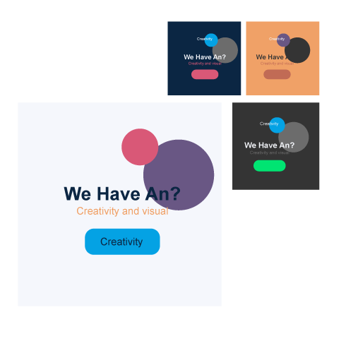

Restaurant Finder Application Prototype.

Design & Färgsystem
Färger

Metoder som jag har använt för färghjulet
Jag använde egen metod för att skilja mellan kombination av olika färger. Jag gjorde fyra boxar som innehåller fyra olika färger. De fyra färger presenterar min bakgrundsfärg. Jag skapar olika former och texter i de boxar för att se hur det passar. På så sätt valde jag mina utvalde färger.